Scenarios
Before using a GPU-accelerated ECS, make sure that the desired Tesla driver and CUDA toolkit have been installed on the ECS for computing acceleration.
- A computing-accelerated (P series) ECS created using a Windows public image has had a Tesla driver of a specified version installed by default.
- A computing-accelerated (P series) ECS created using a Linux public image does not have a Tesla driver installed by default. After the ECS is created, install a driver on it for computing acceleration.
- After a GPU-accelerated ECS is created using a private image, it must have a Tesla driver installed. Otherwise, computing acceleration will not take effect.
This section describes how to install a Tesla driver and CUDA toolkit on a GPU-accelerated ECS.
Notes
- The target ECS has an EIP bound.
- The Tesla driver and CUDA toolkit have not been installed on the ECS.

- Download the CUDA toolkit from the official NVIDIA website and install it. A Tesla driver matching the CUDA version will be automatically installed then. However, if there are specific requirements or dependencies on the Tesla driver version, download the matching Tesla driver from the official NVIDIA website first and then install the driver before installing the CUDA toolkit.
- If a Tesla driver has been installed on the ECS, check the driver version. Before installing a new driver version, uninstall the original Tesla driver to prevent an installation failure due to driver conflicts.
Installing a Tesla Driver on a Linux ECS
The following uses Ubuntu 16.04 64bit as an example to describe how to install the Tesla driver matching CUDA 10.1 on a GPU-accelerated ECS.
The Linux kernel version is compatible with the driver version. If installing the driver failed, check the driver installation log, which is generally stored in /var/log/nvidia-installer.log. If the log shows that the failure was caused by a driver compilation error, for example, the get_user_pages parameter setting is incorrect, the kernel version is incompatible with the driver version. In such a case, select the desired kernel version and driver version and reinstall them. It is recommended that the release time of the kernel version and driver version be the same.
- Log in to the ECS.
- Update the system software based on the OS.
- Ubuntu
Update the software installation source: apt-get -y update
Install necessary programs: apt-get install gcc g++ make
- CentOS
Update the software installation source: yum -y update --exclude=kernel* --exclude=centos-release* --exclude=initscripts*
Install the desired program: yum install -y kernel-devel-`uname -r` gcc gcc-c++
- Ubuntu
- Download the NVIDIA driver package.
Select a driver version at NVIDIA Driver Downloads based on the ECS type. Click SEARCH.
Figure 1 Selecting a NVIDIA driver version
- Select a driver version as required. The following uses Tesla 418.67 as an example.Figure 2 Selecting a driver version
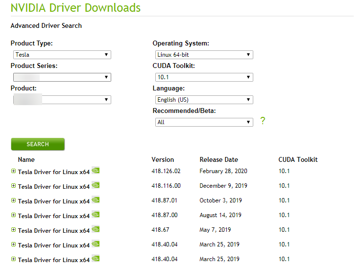 - Click the driver to be downloaded. On the TESLA DRIVER FOR LINUX X64 page that is displayed, click DOWNLOAD.
- Copy the download link.Figure 3 Copying the download link

- Run the following command on the ECS to download the driver:
wget Copied link
For example, wget http://us.download.nvidia.com/tesla/418.67/NVIDIA-Linux-x86_64-418.67.run
Figure 4 Obtaining the installation package
- Run the following command to install the driver:
- (Optional) If the following information is displayed after the command for installing the driver is executed, disable the Nouveau driver.Figure 5 Disabling the Nouveau driver

- Run the following command to check whether the Nouveau driver has been installed:
- Edit the blacklist.conf file.
If the /etc/modprobe.d/blacklist.conf file is unavailable, create it.
vi /etc/modprobe.d/blacklist.conf
Add the following statement to the end of the file:
blacklist nouveau options nouveau modeset=0
- Run the following command to back up and create an initramfs application:
- Select OK for three consecutive times as prompted to complete the driver installation.Figure 6 Completing the NVIDIA driver installation
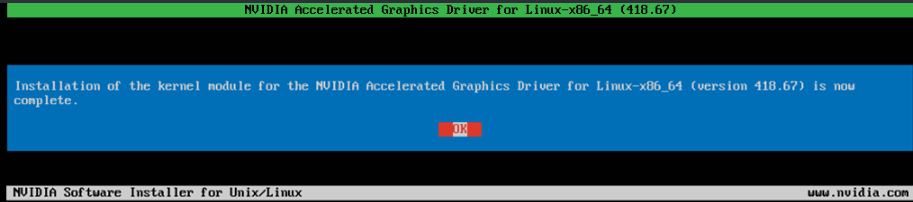 - Run the following command to set systemd:
- Run the reboot command to restart the ECS.
- Log in to the ECS and run the nvidia-smi command. If the command output contains the installed driver version, the driver has been installed.Figure 7 Viewing the NVIDIA driver version
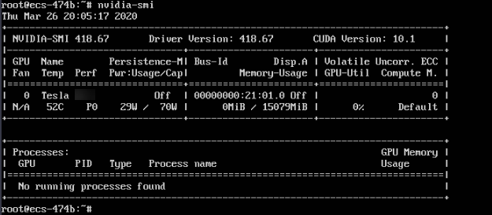
Installing a Tesla Driver on a Windows ECS
The following uses Windows Server 2016 Standard 64bit as an example to describe how to install a Tesla driver on a GPU-accelerated ECS.
- Log in to the ECS.
- Download the NVIDIA driver package.
Select a driver version at NVIDIA Driver Downloads based on the ECS type.
Figure 8 Selecting a driver type (Windows)
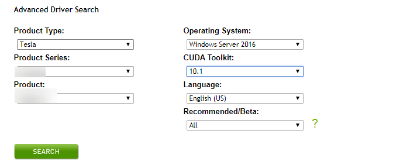 - Select a driver version as required. The following uses Tesla 425.25 as an example.Figure 9 Selecting a driver version (Windows)
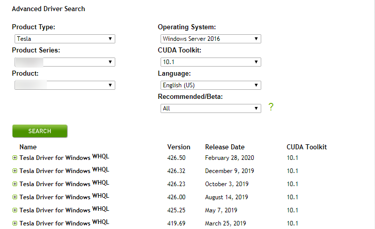 - Click the driver to be downloaded. On the TESLA DRIVER FOR WINDOWS page that is displayed, click DOWNLOAD.
- Click Agree & Download to download the installation package.Figure 10 Downloading the driver installation package

- Double-click the driver and click Run.Figure 11 Running the NVIDIA driver installation program
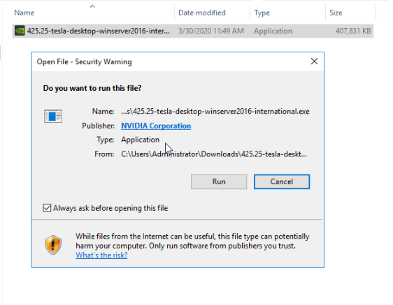 - Select an installation path and click OK.Figure 12 Selecting an installation path
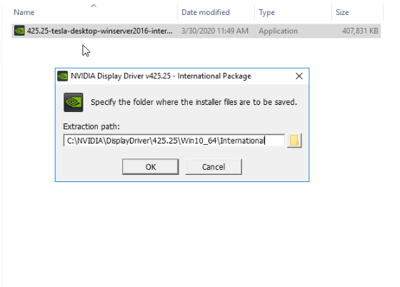 - Install the NVIDIA program as prompted.Figure 13 Completing the driver installation
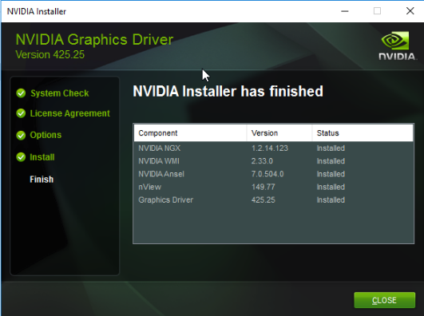 - Restart the ECS.
- Check whether the NVIDIA driver has been installed.
- Switch to Device Manager and click Display adapters.Figure 14 Display adapters
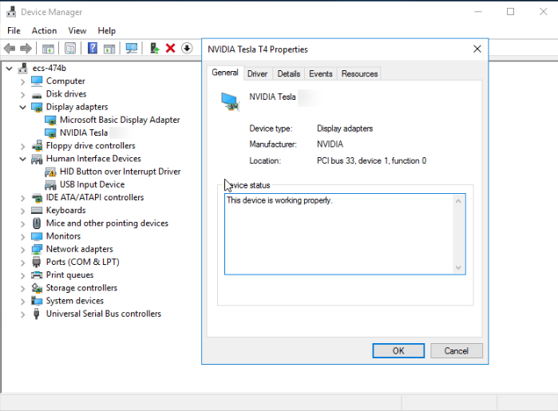
- Open the cmd window on the ECS and run the following commands:
cd C:\Program Files\NVIDIA Corporation\NVSMI
nvidia-smi
If the command output contains the installed driver version, the driver has been installed.
Figure 15 Viewing the NVIDIA driver version
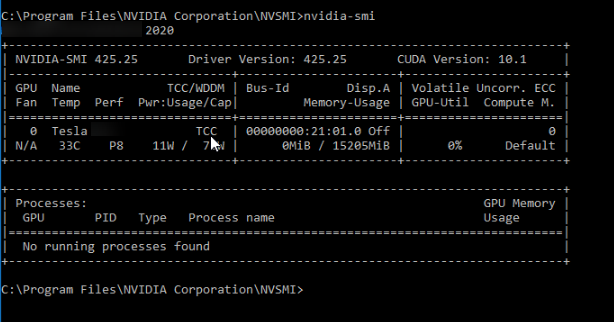
- Switch to Device Manager and click Display adapters.
Installing the CUDA Toolkit on a Linux ECS
The following uses Ubuntu 16.04 64bit as an example to describe how to install the CUDA 10.1 toolkit on a GPU-accelerated ECS.
- Log in to the ECS.
- Update the system software based on the OS.
- Ubuntu
Update the software installation source: apt-get -y update
Install necessary programs: apt-get install gcc g++ make
- CentOS
Update the software installation source: yum -y update --exclude=kernel* --exclude=centos-release* --exclude=initscripts*
Install the desired program: yum install -y kernel-devel-`uname -r` gcc gcc-c++
- Ubuntu
- On the CUDA download page, set parameters according to the information shown in Obtaining a Tesla Driver and CUDA Toolkit.Figure 16 Selecting a CUDA version

- Find the link for downloading CUDA 10.1 and copy the link.Figure 17 Copying the link for downloading CUDA

- Run the following command on the ECS to download CUDA:
wget Copied link
For example, wget https://developer.nvidia.com/compute/cuda/10.1/Prod/local_installers/cuda_10.1.105_418.39_linux.run
Figure 18 Downloading CUDA
- Install CUDA.
- Run the following command to install CUDA:
- Select accept on the installation page and press Enter.Figure 20 Installing CUDA_1
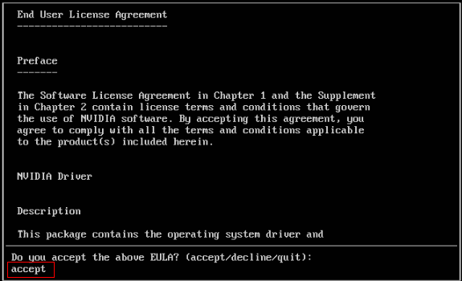 - Select Install and press Enter to start the installation.Figure 21 Installing CUDA_2
 Figure 22 Completing the installation
Figure 22 Completing the installation
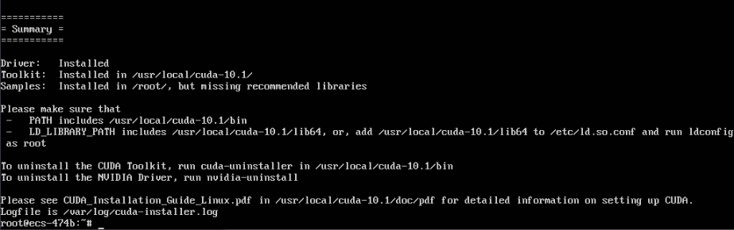 - Run the following command to switch to /usr/local/cuda-10.1/samples/1_Utilities/deviceQuery:
cd /usr/local/cuda-10.1/samples/1_Utilities/deviceQuery
- Run the make command to automatically compile the deviceQuery program.
- Run the following command to check whether CUDA has been installed:
If the command output contains the CUDA version, CUDA has been installed.
Figure 23 deviceQuery common output
- Check the CUDA version.
Figure 24 Checking the CUDA version
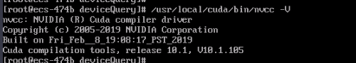 - Run the following command to enable the persistent mode:
Enabling the persistent mode optimizes the GPU performance on Linux ECSs.
Installing the CUDA Toolkit on a Windows ECS
The following uses Windows Server 2016 Standard 64bit as an example to describe how to install the CUDA 10.1 toolkit on a GPU-accelerated ECS.
- Log in to the ECS.
- On the CUDA download page, set parameters according to the information shown in Downloading a CUDA Toolkit.Figure 25 Selecting a CUDA version

- Find the link for downloading CUDA 10.1.Figure 26 Finding the link for downloading CUDA

- Click Download to download the CUDA toolkit.
- Double-click the installation file and click Run to install the CUDA toolkit.Figure 27 Installing CUDA
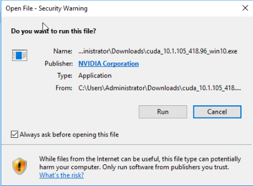 - On the CUDA Setup Package page, select an installation path and click OK.Figure 28 Selecting an installation path
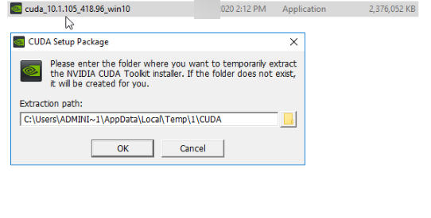 - Install the CUDA toolkit as prompted.Figure 29 Completing the installation
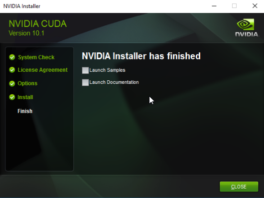